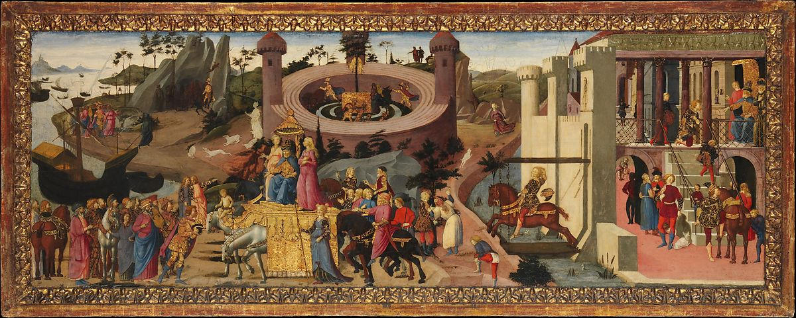

<head>
<meta charset="UTF-8" />
<meta name="keywords" content="drawing, painting" />
<meta name="description" content="drawings by Sunjy" />
<title>Sunjy</title>
<link rel="shortcut icon" type="image/x-icon" href="../../mImages/mCommon/favicon.ico" media="screen" />
<link rel="stylesheet" type="text/css" href="../../mCsses/mCommon/mCssA.css" />
<link rel="stylesheet" type="text/css" href="../../mCsses/mCommon/mCssB.css" />
<link rel="stylesheet" type="text/css" href="../../mCsses/mCommon/mCssC.css" />
<link rel="stylesheet" type="text/css" href="../../mCsses/mCommon/mCssD.css" />
<link rel="stylesheet" type="text/css" href="../../mCsses/mContent/mCssA.css" />
<link rel="stylesheet" type="text/css" href="../../mCsses/mContent/mCssB.css" />
<link rel="stylesheet" type="text/css" href="../../mCsses/mContent/mCssC.css" />
<link rel="stylesheet" type="text/css" href="../../mCsses/mContent/mCssD.css" />
</head>
<script type="text/javascript" src="../../mScripts/mContent/mContentAA.js" /></script>
<script type="text/javascript" src="../../mScripts/mContent/mContentAB.js" /></script>
<script type="text/javascript" src="../../mScripts/mContent/mContentAC.js" /></script>
<script type="text/javascript" src="../../mScripts/mContent/mContentAD.js" /></script>
<script type="text/javascript"></script> 
<script type="text/javascript">
document.write('<div class="mImgAbsolute"></div>');
/*
document.write('<p class="mFontSizeBColor" />From a white paper...</p>');
document.write('<table class="center"><tr><td>');
document.write('');
document.write('</td></tr></table>');
*/
</script>


<script type="text/javascript">
document.write('<p class="mFontSizeBColor" />Scenes from the Story of the Argonauts</p>');
document.write('<p class="mFontSizeSColor" />By Biagio d&#39;Antonio. In this and its companion panel, the story of Jason and the Argonauts unfolds in a continuous narrative. In the first panel, Jason is charged by King Pelias to retrieve the Golden Fleece. Jason then mounts his horse and consults the centaur Chiron on Mount Pelion together with Hercules and Orpheus. In the distance is Jason&#39;s ship, the Argo.<br><br>In this panel, King Aëetes and his daughters Medea and Chalciope meet Jason and his companions. At center, Jason plows the grove of Ares, where the Golden Fleece is guarded, while Orpheus lulls the dragon to sleep so that Jason may steal the fleece. At right, the king sends his sons off to capture the fleeing Jason and Medea.<br><br>The engaged moldings of the panel are original; the pictures were probably installed as the backrests of two benches or were framed in the wainscoting of a room. As was often the case, more than one painter was involved.</p>');
document.write('<table class="center" /><tr><td>');
document.write('<br>In this panel, King Aëetes and his daughters Medea and Chalciope meet Jason and his companions. At center, Jason plows the grove of Ares, where the Golden Fleece is guarded, while Orpheus lulls the dragon to sleep so that Jason may steal the fleece. At right, the king sends his sons off to capture the fleeing Jason and Medea.<br><br>The engaged moldings of the panel are original; the pictures were probably installed as the backrests of two benches or were framed in the wainscoting of a room. As was often the case, more than one painter was involved." />');
document.write('</td></tr></table>');
</script>


